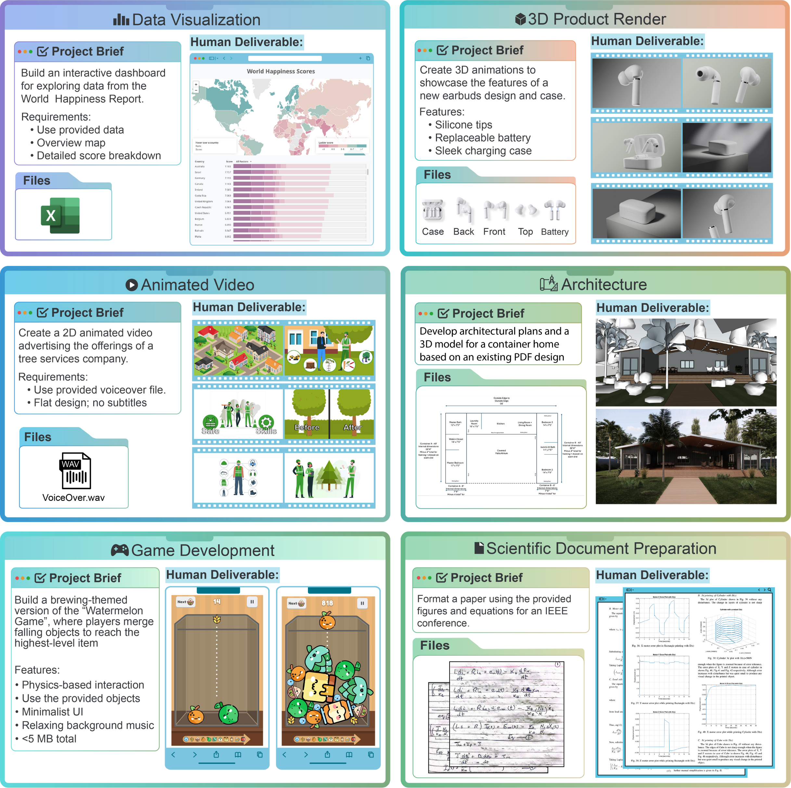

Adoption is wide; control and value are thin. 88 percent of enterprises use AI somewhere, yet 95 percent report zero measurable return on an estimated $30-40 billion of generative AI spend, and only 1 percent of leaders call their company mature. The constraint has shifted away from model capability, into the stack and the operating model around it.
2
Adoption has seven levels, and each is defined by who holds the fallback. From Level 0-1 (shadow use, nothing sanctioned) through Level 4 (AI executes, humans approve) to Level 6 (AI operates, humans govern). Better technology within a level does not move an organization up a level; a changed responsibility split does. Most large enterprises sit at Levels 2-3 today.
3
The road grows faster than most travel it, and it grows unevenly. Technical milestones now land months apart, not years: agent task horizons double roughly every four months, and the frontier is jagged, sprinting in software engineering while jogging in accounting. Set target levels per function, on the frontier's clock rather than annual planning cycles.
4
Two layers decide the pace of everything else. Until agents have identities with scoped credentials (layer 5) and every token is traced to a team, use case, and outcome (layer 7), nothing above Level 4 is safely reachable. Evals (layer 8) set how fast autonomy can widen. The winter 2026 evidence agrees: security and risk is the number one obstacle to scale at 62 percent, and capability leapt while policy-constrained reliability plateaued near 70 percent.
5
Read your company as a nine-row profile, not a single score. Organizations are uneven by construction: a Level 4 observability layer can sit on a Level 2 knowledge layer. The profile locates the risk (any layer two levels below the median breaks what is built on top) and the plan (the upgrade moves of the lagging layers, in dependency order).
6
The endgame is intelligence ownership. Once workflows are instrumented, their traces become training data: the authors' published experiment turned $500 of reinforcement training into a 9B specialist that beats every frontier configuration at 1/68 the cost. Computer use extends the same logic to systems that will never get an API. Instrumentation is the asset, not the overhead.
7
Crossing from pilots to instrumented operations pays compound interest. Governed projects reach production at a multiple of ungoverned ones, measured unit economics replace anecdotes in the board conversation, and each instrumented workflow makes the next one cheaper. The layer that sees the work becomes the layer that runs it.
2
Contents
What's inside, and who built each layer with us
The argument
Executive summary2
The compass at a glance4
The accelerating frontier: timeline, reality, and the control gap5-7
The road, the benchmark map, the jagged frontier, and the AI Index takeaways8-11
The matrix: nine layers by seven levels12
The nine layers, with their co-authors
1Models and inferenceLyceum (co-author to be announced)14
Deep dive: intelligence ownershipAction Layer · Joël Hainzl15
2Orchestration and architectureOSM Data · Jakob Mayer16
3Knowledge, context, and memoryfermisense · Justinas Zaliaduonis17
4Tools and actionsAttention Engineering · Julian Windeck18
Deep dive: computer use and reinforcement learningHuzzle Labs · Ingmar Klein19
5Identity, permissions, and securitykontext.security (co-author to be announced)20
6Deployment and operationsopen slot21
7Observability and costopen slot22
8Evals and improvementopen slot23
9People and operating modelopen slot24
The way out
The crossing sequence and the first 90 days25
Sources26
About this report, method, and authors27
3
The compass at a glance
Agentic AI adoption will be a make-or-break challenge across all industries
Where agent programs actually stand
Most agent pilots die; instrumentation is the difference
88%
of agent pilots never reach production; evaluation and observability gaps are the number one blocker, named by 64 percent.
Yet the pilots that cross pay back in a median of 5.1 months, and teams with governance frameworks ship 12× more agents to production. The gap is instrumentation, and it is the subject of this report.
Share of enterprises by adoption level, from Level 0-1 (shadow use) to Level 6 (agent-operated), %:
Anaconda and Forrester, replicated by a16z and MIT Sloan (2026); Databricks (2026) · pages 6-8
Verification is eating the gains; build evals in
6.4 h/wk
spent supervising AI output ("botsitting"); 69 percent of workers admit shipping unverified AI work.
Glean Work AI Index, June 2026 (n=6,000) · page 24
Plan on four-month cycles, not annual budgets
2× / 4 mo
Agent task horizons double every ~4 months; 12-hour tasks arrived in 2026.
METR (2026) · page 5
Deploy where the frontier is sharp, not everywhere
3.4% of workers, 37.2% of usage
Anthropic Economic Index; 44% of enterprise API traffic · page 10
The frontier compounds while claims outrun reality
Incidents are climbing while safety reporting lags
+55%
documented AI incidents in one year (233 to 362), while 62 percent still name security the top obstacle to scale.
AI Incident Database via AI Index 2026; AI Index survey · page 12
Trust staged tests, not self-reports
57% vs <10%
run multi-step agent workflows by self-report; neutral staging finds fully scaled use in single digits per function.
Anthropic and Material; AI Index 2026 · page 7
Coding reached the human bar within one year
60→100%
SWE-bench Verified went from 60 percent to near 100 percent of the human baseline in a single year.
Stanford AI Index 2026 · page 12
Adoption is spreading at historic speed
53% in 3 yrs
of the population uses generative AI within three years of launch, faster than the PC or the internet.
Stanford AI Index 2026 · page 12
What the winners do about it
Your workflow traces are the asset; they become models
$500 beats the frontier at 1/68 the cost
A 9B specialist trained on workflow traces outperformed every frontier configuration on the target task.
fermisense, the authors' lab (July 2026) · page 15
Locate yourself, then move one level
Locate yourself, then move one level
Seven adoption levels, nine stack layers. Find your row profile in the matrix (page 12), read your lagging layers (pages 14-24), then run the 90-day crossing sequence (page 25).
4
Section 01
Breakthroughs keep accelerating: forty-five months since ChatGPT, nine since Claude Code, one since Kimi K3
The interval between technical breakthroughs is collapsing. Positions are true to the calendar: context windows, inference-time scaling, open reasoning, tool and identity standards, computer use, and specialist training all arrived inside four years, and the spacing keeps tightening toward the present. Gold marks 2026. Annual planning cycles will not keep up with this clock; plan on it directly.
Exhibit 4
The agentic timeline is time-proportional, and the density of events keeps rising toward today
Milestone events from the launch of ChatGPT (November 2022) to August 2026, plotted to scale¹
¹Dates per primary announcements 2022-2026; July 2026 incident per OpenAI and Hugging Face joint disclosures. Sidebar: Kaplan et al. (2020)16, METR (2025-2026)17, Stanford HAI AI Index 20252
5
Section 01 · continued
Everyone has started with AI, but almost no one runs it for real
95%
of organizations report zero measurable return on $30-40 billion of enterprise GenAI investment (MIT NANDA, 2025; methodology debated, direction widely corroborated)3
1%
of leaders describe their company as mature in AI deployment (McKinsey, January 2025)5
16%
of enterprise "agent" deployments qualify as true agents; the rest are fixed-sequence workflows (Menlo Ventures, December 2025)8
Usage spread faster than the ability to govern or measure it. Nearly nine in ten enterprises use AI in at least one function, and employees run far ahead of official rollouts: personal-account AI use is found in over 90 percent of companies. Yet the value evidence is thin, two-thirds of enterprises have not begun scaling, and the top of every credible maturity study converges on the same small number: roughly 4 to 8 percent of companies operate AI as a managed, measured capability. Meanwhile generative AI reached 53 percent population adoption in three years, faster than the PC or the internet (AI Index 2026): consumer habit is outrunning enterprise governance on both sides of the firewall.
The blockage sits between systematic pilots (Level 3) and instrumented operations (Level 4). Levels 0 through 3 can be reached with enthusiasm and budget: licenses, a use-case funnel, a center of excellence. Level 4 is different in kind. It requires a system of record: every agent registered with an owner, every trace captured, every token attributed, permissions explicit, and changes gated by evaluation. That is an architecture and operating-model decision, which is why most companies stall in front of it and why the level distribution below thins so abruptly.
A level is defined by who holds responsibility, never by which model is installed. Level 2: humans do the work, AI drafts. Level 3: humans drive workflows, AI assists inside them. Level 4: AI executes, humans approve consequential actions. Level 5: AI executes, humans handle exceptions. Level 6: AI operates within policy, humans design and govern. Improvement inside a level, however impressive, does not move an organization up a level; a changed split of responsibility does.
Exhibit 5
The distribution thins abruptly to the right of the Level 3-4 boundary; the agentic frontier is nearly empty
Estimated share of mid-size and large enterprises by adoption level, mid-2026, %; bar color follows the level ramp used throughout¹
Level 0-1Shadow
~10
McKinsey: 12% use no AI in any function; shadow personal use present in 90%+ of firms
Level 2Sanctioned
~32
Deloitte: 37% use AI at surface level; MIT NANDA: ~40% deployed LLM chatbots
Level 3Systematic
~33
McKinsey: two-thirds not yet scaling; ~90% of function-specific use cases stuck in pilot
Level 4Instrumented
~13
Cisco Pacesetters 13%; Deloitte: 21% with mature agent governance
Level 5Orchestrated
~4
Top-cohort convergence 4-8% across BCG, McKinsey, MIT CISR, Accenture; Capgemini: 2% fully scaled agents
Level 6Agentic-first
<1
No large enterprise fully qualifies; EY-scale fleets and frontier labs approximate early forms
The Level 3-4 cliff is the whole report in one picture.
¹Authors' synthesis across verified surveys; ranges reflect differing samples and question wording. Self-reported "deployment" figures (for example, 53% of $1B+ US organizations "use agents", KPMG, June 202613) measure presence, not control, and sit mostly within Levels 2-3.
Source: McKinsey State of AI (November 2025)4; MIT NANDA (2025)3; Deloitte State of AI 20269; Cisco AI Readiness Index (October 2025)10; BCG (September 2025)11; Capgemini (July 2025)12; Menlo Ventures (December 2025)8
6
Section 01 · continued
Models are getting stronger much faster than companies get control over them
Four findings from the Stanford HAI AI Index 2026 carry this report's argument: security is the number one obstacle to scale, most functions have not started with agents, capability leapt while policy-constrained reliability did not, and the models themselves are becoming less inspectable: 91.2 percent of 2025's notable models came from industry and 81 of 102 shipped without training code. All four point at the same gate: the control layer has to be built on the enterprise side.
Exhibit 6
Security and risk outrank every other obstacle to fully scaled agentic AI
Main obstacles to reaching fully scaled agentic AI, % of respondents, 2025 survey
Security and risk concerns
62
Technical limitations
38
Regulatory uncertainty
38
Gaps in RAI tooling and control
36
Resource and budget constraints
34
Unclear business value
32
Immature vendor ecosystem
28
Lack of executive support
9
Source: Stanford HAI AI Index Report 2026 (Figure 3.3.10), AI Index and McKinsey survey; published April 20261
Exhibit 7
What enterprises actually deploy: multi-step workflows are the majority, autonomy is still the thin edge
Share of organizations deploying each agent type, % of respondents (violet: enterprise segment); 500+ US technical leaders, late 2025
Single-step tasks
10enterprises 9%
Multi-step workflows within one department
29enterprises 28%
Multi-step across functions, end to end
16enterprises 20%
Autonomous on complex tasks, limited oversight
12enterprises 15%
Any multi-step deployment
57enterprises 62%
Neutral staging agrees on the thin edge: across eleven business functions, fully scaled agent use remains in the single digits (AI Index 2026).
Source: Anthropic and Material, The 2026 State of AI Agents Report, pages 3 and 8; figures verified against the report6
Exhibit 8
Agent capability leapt within one year, while policy-constrained reliability plateaus
Agent benchmark scores, % success, at each benchmark's earlier baseline (gray) vs early 2026 (violet); dashes mark human baselines
Source: Stanford HAI AI Index Report 2026 (Section 2.6, Figures 2.6.1-2.6.6); published April 20261
Self-report runs hot; neutral measurement runs cold; both are true. 80 percent of technical leaders say agents already deliver measurable financial impact and 57 percent run multi-step workflows (Anthropic and Material, n=500+, late 2025)6; neutral staging finds scaled agent use in single digits per function (AI Index 2026)1. Presence is broad, instrumented scale is rare. Ask which one your dashboard measures.
7
Section 01
Every company is on the same road, and the finish line keeps moving
One continuous path, seven observable states, and a finish line that keeps moving. Every enterprise is somewhere on this road, usually further left than its strategy deck claims. The stations are defined by who holds the fallback, most journeys stall at the boundary between Level 3 and Level 4, and the road itself grows: every week of frontier progress adds new terrain beyond the last station.
Exhibit 1
Seven states mark the road from shadow use to agent-operated work, and the road lengthens every week
Find the last state that is fully true of your organization: that is where you stand
8
Section 01 · continued
What the frontier can do, in nine tests
Benchmarks are the industry's standardized exams, and the fastest early warning you have. Each is a fixed set of tasks with objective grading, so models can be compared across labs and across time. They measure the ceiling under ideal conditions rather than your floor in production; when a benchmark your work depends on jumps, your target levels are due for review.
Exhibit 9
Released frontier models now clear most human baselines; the open gaps are exactly where work is long and messy
Best published score by a released frontier model, % of tasks solved, August 2026 unless noted; dashed marks: human baselines where measured; violet bars: scores refreshed on live leaderboards in August 2026
Knowledge and reasoning
Humanity's Last Exam2,500 questions written by domain experts to be the hardest gradeable academic exam. Text-only score; tool-augmented runs land higher.
53.3 · Claude Fable 5
GPQA DiamondPhD-level science questions; domain PhDs score ~65 even with the web. Effectively saturated.
domain PhDs ~65
94.3 · Gemini 3.1 Pro
ARC-AGI-2Novel abstract grid puzzles, easy for people and built to resist memorization; the standing test of fluid reasoning.
avg tester ~60
87.9 · Claude Opus 4.8, May 2026
AIMEUS olympiad-qualifier mathematics. Saturated in December 2025 and retired as a differentiator; benchmarks age fast.
100 · GPT-5.2 Pro, Dec 2025
Software engineering
SWE-bench VerifiedFix real reported bugs in real open-source repositories, graded by each project's own test suite. Was 76.8 in February 2026.
95.0 · Claude Fable 5
Terminal-Bench 2.0End-to-end jobs in a live terminal: builds, scripts, system administration. The shared reference in frontier model cards.
77.3 · frontier best, Apr 2026
Acting in the world
OSWorld-VerifiedFull desktop computer use across real applications. Top five models sit within 1.1 points; humans solve ~72 of the original suite.
86.1 · Qwen3.8 Max, Aug 2026
GAIAEveryday assistant requests that need browsing, tools, and several steps; conceptually simple for people, humans score 92.
human 92
74.5 · frontier best, Apr 2026
Remote Labor Index240 real, paid freelance projects (game dev, CAD, video, data work), graded against professional client standards; the truest test of long-running real work.
15.8 · Claude Fable 5, Jul 2026; 2.5 at launch, late 2025
Scores are the best published result by a released model on each benchmark's canonical split under the leaderboard's scaffold; unreleased preview models lead several boards and are excluded here. Blind human preference agrees the race is tight: the top four labs sit within 25 Elo points (LMArena, March 2026)31.
Source: LLM-Stats and BenchLM leaderboard aggregators, August 3-5, 202632; OSWorld-Verified leaderboard33; Stanford HAI AI Index 2026 (April) for Terminal-Bench and GAIA1; benchmark definitions per the original papers; Remote Labor Index: Scale AI and the Center for AI Safety, 240 Upwork projects, launch late 2025 with July 2026 update
How to monitor without drowning: four habits. Track one preference board (LMArena), one composite index (LLM-Stats), and the task suite closest to your work, quarterly. Distrust any score quoted without a date and a scaffold; both move results by double digits. Retire a benchmark once the frontier clusters within a point or two. Above all, build a private eval from your own workflows: public benchmarks measure the ceiling, your traces measure your floor.

Real client projects from the Remote Labor Index: much of today's freelance work is already solved impressively, and the automation rate is climbing fast, from 2.5 to 15.8 percent in eight months. But long-running, end-to-end client work remains wide open.
9
Section 01 · continued
In reality, AI capabilities are jagged, so productivity gains differ
The road does not grow evenly, and that is the planning mistake most roadmaps make. Frontier capability sprints in some functions and jogs in others: coding agents compound weekly while judgment-heavy work advances slowly. The same enterprise can therefore be correctly ambitious in software engineering and correctly cautious in accounting. Set target levels function by function; one company-wide target hides the variance that matters. Neutral measurement agrees: productivity gains run 14 to 26 percent in customer support and software development, with weaker or negative effects where judgment dominates (AI Index 2026).
Exhibit 2
The same road, six speeds: enterprises walk at a similar pace everywhere, while the frontier adds road at very different rates per function
Adoption journey by company function; solid road = defined levels 0-6, dashed road = terrain added by frontier progress; walking figure = typical enterprise position and pace, sprinting figure = frontier pace; weekly extension rates are illustrative rankings¹
¹Stations use the level color ramp and icons from the journey exhibit; numbers mark levels 0-6. Extension lengths and weekly rates are illustrative rankings, consistent with published capability progress by domain.
Source: Agentic Adoption Levels, Hildesheim and Hainzl, August 2026
Exhibit 3
The capability overhang, drawn: the frontier already covers half the economy in theory, while observed usage fills a sliver of it
Estimated share of category tasks within frontier capability (outer shape) vs share with material AI usage today (inner), by occupational category¹
Usage concentrates where capability is strongest. Computer and mathematical occupations hold 3.4 percent of US jobs yet 37.2 percent of Claude conversations, and 44 percent of enterprise API traffic. Usage flows to wherever the frontier is sharp.
The consequence is a portfolio, not a policy. Field the sprinters where the frontier runs fastest, hold controls where it stumbles, and re-test the edge quarterly; the boundary moves faster than annual planning assumes.
¹Authors' estimate: theoretical coverage from task-level capability mappings; observed usage anchored to Anthropic Economic Index occupational shares.
Source: Anthropic Economic Index7 (first report, 3.5M+ conversations; enterprise API figure per The 2026 State of AI Agents Report6, p.44); jagged-frontier concept per Dell'Acqua, Mollick et al. (2023)18
10
Section 01 · continued
Where we stand, in the AI Index's own words
The fifteen top takeaways of the Stanford AI Index Report 2026, quoted verbatim1. Together they are the most complete neutral snapshot of where AI actually stands, and they carry every argument this report makes.
1
AI capability is not plateauing. It is accelerating and reaching more people than ever. Industry produced over 90% of notable frontier models in 2025, and several of those models now meet or exceed human baselines on PhD-level science questions, multimodal reasoning, and competition mathematics. On a key coding benchmark, SWE-bench Verified, performance rose from 60% to near 100% of meeting the human baseline in a single year. Organizational adoption reached 88%, and 4 in 5 university students now use generative AI.
2
The U.S.-China AI model performance gap has effectively closed. U.S. and Chinese models have traded the lead multiple times since early 2025. In February 2025, DeepSeek-R1 briefly matched the top U.S. model, and as of March 2026 Anthropic's top model leads by just 2.7%. The U.S. still produces more top-tier AI models and higher-impact patents, while China leads in publication volume, citations, patent output, and industrial robot installations. South Korea stands out for its innovation density, leading the world in AI patents per capita.
3
The United States hosts the most AI data centers, with the majority of their chips fabricated by one Taiwanese foundry. The United States hosts 5,427 data centers, more than 10 times any other country, and it consumes more energy than any other country. A single company, TSMC, fabricates almost every leading AI chip, making the global AI hardware supply chain dependent on one foundry in Taiwan, though a TSMC-U.S. expansion began operations in 2025.
4
AI models can win a gold medal at the International Mathematical Olympiad but cannot reliably tell time, an example of what researchers call the jagged frontier of AI. Gemini Deep Think earned a gold medal at IMO, yet the top model reads analog clocks correctly just 50.1% of the time. AI agents made a leap from 12% to ~66% task success on OSWorld, which tests agents on real computer tasks across operating systems, though they still fail roughly 1 in 3 attempts on structured benchmarks.
5
Robots still fail at most household tasks, even as they excel in controlled environments. Robots succeed in only 12% of household tasks, highlighting how far AI is from mastering the physical world. On RLBench, robotic manipulation in software-based simulations has reached 89.4% success, but the gap between predictable lab settings and unpredictable household environments is wide.
6
Responsible AI is not keeping pace with AI capability, with safety benchmarks lagging and incidents rising sharply. Almost all leading frontier AI model developers report results on capability benchmarks, but reporting on responsible AI benchmarks remains spotty. Documented AI incidents rose to 362, up from 233 in 2024. Adding to the challenge, recent research found that improving one responsible AI dimension, such as safety, can degrade another, such as accuracy.
7
The United States leads in AI investment, but its ability to attract global talent is declining. U.S. private AI investment reached $285.9 billion in 2025, more than 23 times the $12.4 billion invested in China, though looking at just private investment figures likely understates China's total AI spending, given its government guidance funds. The U.S. also led in entrepreneurial activity with 1,953 newly funded AI companies in 2025, more than 10 times the next closest country. However, the number of AI researchers and developers moving to the U.S. has dropped 89% since 2017, with an 80% decline in the last year alone.
8
AI adoption is spreading at historic speed, and consumers are deriving substantial value from tools they often access for free. Generative AI reached 53% population adoption within three years, faster than the PC or the internet, though the pace varies by country and correlates strongly with GDP per capita. Some show higher-than-expected adoption, such as Singapore (61%) and the United Arab Emirates (64%), while the U.S. ranks 24th at 28.3%. The estimated value of generative AI tools to U.S. consumers reached $172 billion annually by early 2026, with the median value per user tripling between 2025 and 2026.
9
Productivity gains from AI are appearing in many of the same fields where entry-level employment is starting to decline. Studies show productivity gains of 14% to 26% in customer support and software development, with weaker or negative effects in tasks requiring more judgment. AI agent deployment remains in single digits across nearly all business functions. In software development, where AI's measured productivity gains are clearest, U.S. developers ages 22 to 25 saw employment fall nearly 20% from 2024, even as the headcount for older developers continues to grow.
10
AI's environmental footprint is expanding alongside its capabilities. Grok 4's estimated training emissions reached 72,816 tons of CO2 equivalent. AI data center power capacity rose to 29.6 GW, comparable to New York state at peak demand, and annual GPT-4o inference water use alone may exceed the drinking water needs of 1.2 million people.
11
AI models for science can outperform human scientists, though bigger models do not always perform better. Frontier models outperform human chemists on average on ChemBench, yet they score below 20% on replication in astrophysics and 33% on Earth observation questions. A 111-million-parameter protein language model, MSAPairformer, beat previous leading methods on ProteinGym, and a 200-million-parameter genomics model, GPN-Star, outperformed a model nearly 200 times larger. Most AI foundation models for science come from cross-sector collaborations, in contrast with the industry-dominated landscape of general-purpose AI.
12
AI is transforming clinical care, but rigorous evidence remains limited. AI tools that automatically generate clinical notes from patient visits saw substantial adoption in 2025. Across multiple hospital systems, physicians reported up to 83% less time spent writing notes and significant reductions in burnout. Beyond certain tools, however, the evidence base for clinical AI remains thin. A review of more than 500 clinical AI studies found that nearly half relied on exam-style questions rather than real patient data, with only 5% using real clinical data.
13
Formal education is lagging behind AI, but people are learning AI skills at every stage of life. Over 80% of U.S. high school and college students now use AI for school-related tasks, but only half of middle and high schools have AI policies in place, and just 6% of teachers say those policies are clear. Outside the classroom, AI engineering skills are accelerating fastest in the United Arab Emirates, Chile, and South Africa. The number of new AI PhDs in the U.S. and Canada increased 22% from 2022 to 2024, the PhDs that make up that increase took jobs in academia, not in industry.
14
AI sovereignty is becoming a defining feature of national policy, but capabilities remain uneven, even as open-source development helps to redistribute who participates. National AI strategies are expanding, particularly among developing economies, and state-backed investments in AI supercomputing are rising in parallel, a sign of growing ambitions for domestic control over AI ecosystems. Yet model production remains concentrated in the U.S. and China. Open-source development is starting to redistribute participation, with contributions from the rest of the world now outpacing Europe and approaching the United States on GitHub, fueling more linguistically diverse models and benchmarks.
15
AI experts and the public have very different perspectives on the technology's future, and global trust in institutions to manage AI is fragmented. When it comes to how people do their jobs, 73% of experts expect a positive impact, compared with just 23% of the public, a 50-point gap. Similar divides appear for AI's impact on the economy and medical care. Globally, trust in governments to regulate AI varies. Among surveyed countries, the United States reported the lowest level of trust in its own government to regulate AI, at 31%. Globally, the EU is trusted more than the United States or China to regulate AI effectively.
Quoted verbatim from: Sajadieh, Fattorini, Perrault, Gil, et al., "The AI Index 2026 Annual Report," AI Index Steering Committee, Stanford Institute for Human-Centered AI, April 2026, Top Takeaways (pp. 9-11). Reproduced under CC Attribution-NoDerivatives 4.0.
11
Section 02
Nine layers, one honest picture of where you stand
Place your organization row by row, with an artifact as evidence for every placement. The registry, the cost report, the eval run: no artifact, no level. Your level is the median of the nine rows; your risk is any row two or more levels below it; your plan is the lagging rows' upgrade moves, taken in dependency order. Identity (5) and observability (7) come first in every workable sequence, and evals (8) set how fast autonomy can safely widen.
Exhibit 10
Identity and cost observability come before everything above Level 4; evals set the speed of autonomy
Observable state per layer and level¹
Level 0-1 ShadowUnmanaged, unofficial
Level 2 SanctionedHuman works, AI drafts
Level 3 SystematicHuman drives, AI assists
Level 4 InstrumentedAI executes, human approves
Level 5 OrchestratedAI executes, human on exceptions
Level 6 Agentic-firstAI operates, human governs
1 Models & inferenceConfiguration
Personal accounts only
1-2 vendor suites, default models
3+ vendors, keys per team, choice by habit
Gateway portfolio, routing, virtual keys
Self-hosted specialists, eval-driven routing
Task-tuned fleet, continuous retraining
2 Orchestration & architectureConfiguration
Copy-paste between apps
Single-turn prompting in vendor UIs
First chains and no-code flows, brittle
Deterministic pipelines, gates built in
Orchestrator-worker patterns, supervisors
Agent meshes, agent-first process design
3 Knowledge, context & memoryContext
Knowledge in heads, pasted ad hoc
Chat-with-docs on scattered sources
Per-team RAG, duplicated effort
Governed, permission-aware sources, reused
Company brain, managed agent memory
Self-maintaining knowledge substrate
4 Tools & actionsControl, Configuration
None, AI only talks
AI reads and drafts, humans act
First function calls, per-app bots
Tool registry, MCP connectors, writes gated
Cross-system action, escalation not approval
Agent-to-agent transactions
5 Identity, permissions & securityControl
Data leaves via personal prompts
SSO and DLP for humans, AI has no identity
Shared keys, borrowed OAuth, no delegation chain
Per-agent identity, kill switch, audit
Delegation chains, sandbox by default
Identity fabric incl. external agents
6 Deployment & operationsConfiguration
SaaS defaults
Vendor cloud only
Laptop scripts, pilots run where built
Sandboxes, staging, checkpoints
Canaries, failover, agents watching agents
Autonomous operations within policy
7 Observability & costCost
Spend hidden in expenses
License invoices, seat counts
Token dashboards without attribution
Full traces, cost per agent, team, use case
Cost per outcome drives routing
Real-time AI P&L
8 Evals & improvementCultivation
Vibes
Thumbs up or down
Manual spot checks, "pilot went well"
Golden sets, gated changes, calibrated judges, replay
Online evals, loop closed to tuning
Self-improving fleet under eval governance
9 People & operating modelCultivation
Enthusiasts self-teach
IT admin owns licenses, generic training
AI lead and CoE, skills pool with power users
Named owner per workflow and agent, trace-based coaching
Orchestration as a role, fleet managers
Organization designed around fleets
¹Column shading deepens with the adoption level; icons mark what each stack layer covers. Three themes run across all rows rather than owning one: data quality, governance and compliance, and use-case value selection.
Source: Agentic Adoption Levels (Levels 0-6) and Agentic Stack Matrix, Hildesheim and Hainzl, August 2026; design conventions per CMMI capability profiles, SAE J3016 responsibility levels, NIST CSF profiles, CISA Zero Trust Maturity Model34
1. Place, with evidence. Per row, pick the cell that matches reality, and name the artifact that proves it.
2. Read the profile. Median = your level. Spread = your risk. The lagging rows, not the average, set the agenda.
3. Move in dependency order. Identity (5) and observability (7) first, evals (8) second, autonomy (4, 6) after, models (1) and people (9) continuously. If you take one action from this page: bring rows 5 and 7 to Level 4 before scaling anything else.
The mental model behind this matrix. Determine an agentification level for every serious value-creation flow in the organization. Many processes should not exist at all going forward; agents do not belong everywhere. And adoption does not happen at the level of the organization or the tool: it happens at the level of the workflow.
12
Section 02
Now, the nine layers, one by one
For every layer: what it is, the market map of who builds it, what good looks like at each level, and the one move that matters, written with the practitioners building the layer.
1 Models and inferencewith Lyceum
2 Orchestration and architecturewith Jakob Mayer, OSM Data
3 Knowledge, context, and memorywith Justinas Zaliaduonis, fermisense
4 Tools and actionswith Julian Windeck, Attention Engineering
5 Identity, permissions, and securitywith kontext.security
6 Deployment and operationsopen slot
7 Observability and costopen slot
8 Evals and improvementopen slot
9 People and operating modelopen slot
13
Section 03 · layer 1 · configuration dimension
Models and inference
L
Co-authorTo be announced · Founder, Lyceum
Lyceum
Lyceum is a European AI cloud from Berlin: serverless inference on open models plus dedicated GPU capacity, with EU data residency. The practitioner view of the inference stack follows in the next revision.
37%
of enterprises already run five or more foundation models in production (a16z CIO survey, June 2025)
1/68
unit cost of our task-trained 9B open model vs the strongest frontier configuration on the same workflow, at higher quality (fermisense.com, July 2026)
Multi-model is now the enterprise default, which makes routing the real decision. Enterprises deploy three or more foundation models and match them to use cases by performance and cost. Vendor share shifts fast: Anthropic overtook OpenAI in enterprise API usage during 2025, and per-token prices keep falling while consumption rises faster. Any architecture hard-wired to one provider is a liability; the question changes from "which model" to "who decides which model, per task, on what evidence".
Specialist models turn inference from a cost line into an asset. Frontier APIs win on general capability, but task-trained small models beat them on narrow, high-volume workflows at a fraction of the cost, and they run on hardware you own. The route there runs through the gateway: once traffic is routed and measured, the high-volume tasks that justify a specialist identify themselves.
Exhibit 11
The model landscape splits into four segments; the gateway segment is where control begins
Selected players per segment, not exhaustive¹
Frontier model APIs
Maximum capability, fastest start; premium pricing and a data boundary to manage
OpenAIAnthropicGoogle DeepMindxAICohere
Open-weights families
Control, residency, and unit cost at volume; you own quality management
Meta LlamaMistralDeepSeekQQwenMoonshot KimiZ.ai GLM
Gateways and routing
One neutral chokepoint: keys, budgets, allowlists, fallbacks, task-based routing
LiteLLMOpenRouterPortkeyKongCloudflare
Serving and tuning
Self-hosted inference and the specialist-model loop, from serving engines to fine-tuning
¹Logos are the property of their respective owners and appear for identification only.
Source: Menlo Ventures, State of Generative AI in the Enterprise (November 2024, December 2025)8; a16z enterprise CIO survey (June 2025)15
Archetype
Value proposition
Choose when
Frontier API first
Best general capability, zero infrastructure, newest features earliest
Low volume, exploratory work, frontier reasoning
Gateway-mediated portfolio
Neutral control point: swap models without code change, budgets and policy per key
From Level 4 onward, always; prerequisite for layers 5 and 7
Self-hosted open weights
Data residency, predictable unit cost, no external dependency
Sensitive data, high volume, sovereignty needs
Task-tuned specialists
Beats frontier per dollar on narrow workflows, runs on owned hardware
Stable, high-volume tasks with measurable quality
What good looks like, by level
Level 1Vendor suites as shipped
Level 2Team keys, habit-based choice
Level 3Gateway, virtual keys, routing
Level 4Specialists join the portfolio
Level 5Fleet retrained from traces
DIAGNOSTIC Could you swap the model behind your flagship workflow without touching code? Do you know cost and quality per model per task, or only per vendor invoice?
So what?Put one gateway in front of all model traffic and move the raw keys into it. Every other capability in this report attaches to that chokepoint.
14
Section 03 · layer 1 deep dive · configuration dimension
A small model trained on your own work beats the giants at that job
JH
Co-authorJoël Hainzl · Co-Founder, Action Layer
Action Layer
Action Layer builds the system of record for the agentic workforce: registered agents with owners, full traces, and token-level attribution. Instrumented workflows of exactly this kind produce the training data this page turns into specialist models.
87.3%
of the maximum achievable score reached by the authors' GRPO-trained 9B open model on catalog review; five frontier models plateaued at 69.7 to 76.9 percent (fermisense.com, July 2026)
2.2x
revenue growth of the top quartile of AI spenders from November 2022 to December 2025, against roughly 15 percent for firms with zero AI spend (Ramp data, via fermisense.com)
The winners converge on one playbook: an open model, proprietary task data, and reinforcement learning against a scored copy of the workflow. Bridgewater reports a trained model making roughly 30 percent fewer mistakes than the best frontier model, Harvey's legal agent beats frontier models on its own rubrics, and Intercom's Fin resolves more support issues at lower cost. Most organizations get there pragmatically: 47 percent combine off-the-shelf agents with custom-built components rather than choosing one or the other (Anthropic and Material, late 2025). The AI Index reaches the same conclusion independently: OLMo 3.1 Think 32B, roughly 90 times smaller than Grok 4, matches it on benchmarks like AIME through data curation alone (AI Index 2026, p. 27).
Our own published experiment shows the economics. On e-commerce catalog integrity with 200 held-out episodes, a 9B open model trained with GRPO for about $500 (two workstation GPUs, 1,000 steps, three and a half days) cleared every frontier configuration we tested by more than 10 points, at $0.50 per 1,000 listings: 40 times cheaper than the least expensive frontier setup, 68 times cheaper than the strongest, and roughly 340 times cheaper than the most expensive. The five frontier models plateaued within a tenth of a point of each other; training on the task cleared that ceiling.
Exhibit 12
On one instrumented workflow, the trained specialist beats every frontier configuration at a fraction of the cost
Share of maximum achievable score vs cost per 1,000 listings, e-commerce catalog integrity, 200 held-out episodes¹
¹Same tools, images, and scorer for every configuration; frontier models run with optimized prompts. Specialist: Qwen3.5-9B trained with GRPO via prime-rl.
Source: Hildesheim, Hainzl et al., "The Rise of Intelligence Ownership", fermisense.com, July 27, 202621
So what?Once a workflow is instrumented and evaluated at Level 4, its traces become training data. Specialists are how Level 5 economics arrive: quality above the frontier plateau at commodity cost, on hardware you own. And Epoch AI projects high-quality public training data could be depleted between 2026 and 2032 (AI Index 2026): instrumented traces are among the few data assets that appreciate.
15
Section 03 · layer 2 · configuration dimension
Orchestration and architecture
Co-authorJakob Mayer · Founder and CEO, OSM Data
OSM Data
OSM Data builds mathematical optimization systems for energy planning, trading, scheduling, and real-time operations, connecting constrained decisions across markets and time horizons. Deterministic decision systems of exactly this kind are the rails this layer wraps around agent workflows.
16%
of enterprise "agent" deployments qualify as true agents; most are fixed-sequence workflows (Menlo Ventures, December 2025)
~90%
of transformative, function-specific use cases remain stuck in pilot (McKinsey, June 2025)
The framework wars matter less than the control-flow decision. Whether control flow lives in human clicks, in code, or in the model is the real architectural choice at every level. The production doctrine across credible practice is consistent: build the simplest thing that works, use workflow patterns before autonomous agents, and add complexity only when a measured gap demands it.
Most production "agents" are workflows, and that is fine. The failure mode is not too little autonomy but the god-agent that owns everything and fails like a company where every decision routes through one person. Bounded ownership per agent, on a deterministic spine, with AI reserved for genuine judgment points, is the architecture that survives contact with audit, scale, and cost.
Exhibit 13
Four segments serve different builders; mature stacks combine a code-first core with deterministic rails
Selected players per segment, not exhaustive¹
Code-first agent frameworks
Full control and testability for engineering teams; the de facto standard layer
¹Logos are the property of their respective owners and appear for identification only.
Source: Anthropic, Building Effective Agents (December 2024)22; OpenAI, A Practical Guide to Building Agents (2025)23; Menlo Ventures (December 2025)8
Archetype
Value proposition
Choose when
Deterministic spine, AI at judgment points
Auditable, testable, cheap; AI only where rules run out
Regulated and high-stakes workflows; the default from Level 4
Code-first framework
Control over state, retries, gates; portable across vendors
You have engineers and the workflow is core IP
No-code flows
Speed and citizen builders; good for discovery
Level 3 experimentation; expect a rebuild before production
Suite agents
Native data access, fast time to value inside one system
The workflow lives entirely inside that suite
What good looks like, by level
Level 1Prompting inside vendor UIs
Level 2First chains and no-code flows
Level 3Instrumented pipelines with gates
Level 4Orchestrator-worker patterns
Level 5Agent meshes, agent-first design
DIAGNOSTIC Can the flagship workflow run end to end without a person ferrying context between tools?
So what?Rebuild the one or two workflows that matter as instrumented pipelines with explicit human gates; kill the rest of the pilot zoo.
fermisense is the authors' applied-research lab: task-trained specialist models from instrumented workflow traces. The intelligence-ownership experiment on page 15 is its work.
51%
of enterprises had adopted retrieval-augmented generation by late 2024, up from 31% a year earlier (Menlo Ventures, November 2024)
90%+
of companies have workers regularly using personal AI tools, feeding company context into ungoverned channels (MIT NANDA, 2025)
The maturity path is retrieval sophistication plus governance, not more indexes. The field progressed from naive retrieval-augmented generation through advanced and modular retrieval to graph-based and agentic retrieval, where the model decides when and how to retrieve. The enterprise problem differs from the demo problem: permission-aware retrieval, provenance per answer, and one governed source reused across workflows instead of five bespoke builds.
Context engineering has replaced prompt engineering as the discipline. The practice: curate the smallest set of high-signal tokens, compact aggressively, keep notes outside the window, retrieve just in time. Agent memory is becoming a managed service with retention rules, and memory poisoning is now a named attack class to defend against. Since January 2025, more than half of newly published web content is AI-generated (51.7 percent; Graphite via AI Index 2026), so an ungoverned substrate is majority-synthetic at the margin.
Exhibit 14
Four segments, one test: does company knowledge reach the model governed, permissioned, and reused
Selected players per segment, not exhaustive¹
Vector and hybrid stores
The retrieval substrate; differences are operating model and hybrid-search depth
Permission-aware, cross-tool retrieval as a product
GleanElasticMicrosoft SearchCoveoOnyx
Graph and structured context
When relations carry the meaning: entities, hierarchies, cross-document reasoning
Neo4jGraphRAGLlamaIndex
Agent memory layers
Persistent episodic and semantic memory across sessions, with temporal validity
LettaZepMem0CogneeSupermemory
¹Logos are the property of their respective owners and appear for identification only.
Source: Gao et al., Retrieval-Augmented Generation survey (2023)19; Microsoft GraphRAG (2024)24; Anthropic, Effective Context Engineering (September 2025)22; Zep (2025)24
Archetype
Value proposition
Choose when
DIY retrieval per team
Full flexibility, fastest first demo
Level 3 exploration; consolidate before it multiplies
Managed enterprise index
Permission-aware retrieval across tools, bought not built
Broad access matters more than custom pipelines
Governed context sources
One connector per system of record, reused by every workflow
From Level 4; the reuse pattern that compounds
Memory service
Agents that remember across sessions, with audit and retention
Level 5 long-running agents; govern like any data store
What good looks like, by level
Level 1Copy-paste context, app ACLs
Level 2Per-team RAG, duplicated effort
Level 3Governed, permission-aware sources
Level 4Company brain, managed memory
Level 5Self-maintaining substrate
DIAGNOSTIC Is retrieval permission-aware, or can the index see more than the asking user should?
So what?Stand up one governed, permission-aware context source and make two workflows share it.
17
Section 03 · layer 4 · control and configuration dimensions
Attention Engineering builds Coast: an audit-first layer that records on-screen work locally into agent-readable context and replayable trails.
40%
of enterprise applications will ship task-specific agents by end-2026, up from under 5% in 2025 (Gartner, August 2025)
1M+
custom agents created by Microsoft customers in a single quarter, most outside IT review (Microsoft Build, May 2025)
The protocol layer has consolidated, which de-risks the build. MCP, the Model Context Protocol for connecting agents to tools, went from launch in late 2024 to an OAuth-grade security specification, a public registry with private enterprise sub-registries, and neutral governance under the Linux Foundation, alongside the A2A protocol for inter-agent traffic. Betting on MCP is now the low-risk choice; the enterprise pattern is an allowlisted private sub-registry with scoped tokens per tool.
Design tools like an attack surface, because they are one. Few, sharp, well-described tools beat many vague ones: every tool is decision noise for the model and reach for an attacker. Reads can run broad; writes are gated by action class until evals earn escalation-only supervision. Computer use covers the legacy systems without APIs, at the price of sandboxing discipline.
Exhibit 15
Standards now anchor the action layer; platforms and computer use extend its reach
Selected players per segment, not exhaustive¹
Protocols and registries
The standards spine: connectivity, discovery, and inter-agent communication
MMCP and MCP RegistryA2A, Agentic AI FoundationOOpenAPISmithery
Integration platforms
Thousands of prebuilt actions; fastest surface, needs registry governance
ZapierMaken8nWorkatoComposioArcadePipedream
Computer use and browsing
Agents operating user interfaces directly; reach into systems that will never get an API
The existing bot estate: deterministic, brittle, increasingly orchestrated by agents
UiPathAutomation AnywherePPower Automate
¹Logos are the property of their respective owners and appear for identification only.
Source: Model Context Protocol specification and registry (2024-2025)25; Linux Foundation, Agentic AI Foundation and A2A (2025)26; Gartner (August 2025)14
Archetype
Value proposition
Choose when
MCP-first connectors
Standardized, governable, reusable across every agent and vendor
Core systems of record; the Level 4 default
Integration-platform actions
Breadth today: thousands of SaaS actions without build effort
Long tail of tools, wrapped under registry governance
DIAGNOSTIC Can an agent change a record in a business system today, and under whose credentials? Could you list every tool every agent can call?
So what?Stand up the tool registry and per-agent scoping before expanding what agents can touch. An action surface without identity is an incident schedule.
18
Section 03 · layer 4 deep dive · control and configuration dimensions
Computer use and reinforcement learning
Co-authorIngmar Klein · Founder, Huzzle Labs
Huzzle Labs
Huzzle Labs trains small computer-use models in proprietary reinforcement-learning environments, built with a network of 300,000+ domain experts. Its h-1 family ranks beside far larger frontier models on OSWorld and keeps a fully local, replayable audit trail.
66.3%
top score on OSWorld real-computer tasks, within six points of the 72 percent human baseline and up from 12 percent two years earlier (AI Index 2026)
8B
parameters in Huzzle Labs' h-1 computer-use model, trained in its own RL environments and ranking beside far larger frontier models on OSWorld
Computer use turns the screen itself into the API. Agents that see pixels and operate keyboard and mouse reach the systems that will never expose an interface: the plant terminal, the decades-old ERP screen, the supplier portal. Capability has moved from party trick to near-human on real desktop tasks in two years, which changes the reach of Levels 4 and 5: the automatable surface now includes the software your integration roadmap had written off.
A specialist ecosystem is forming beside the frontier. Anthropic and OpenAI ship general computer-use agents; open-source browser agents cover the web; and small task-trained models are arriving: Huzzle Labs trains its Huzzle World family (1B to 8B) in proprietary RL environments built with a network of 300,000+ domain experts, and Coast by Attention Engineering reads the screen instead of recording clicks, recovers from its own missteps mid-run, and leaves a timestamped, replayable audit trail with fully local memory. That audit-first, self-hosted profile is exactly what regulated European enterprises need from this layer.
Exhibit 16
The computer-use stack: frontier generalists, open-source browsers, and audit-first specialists
Selected players per segment, not exhaustive¹
Frontier computer use
General-purpose screen agents from the labs; broad capability, cloud-hosted
Anthropic computer useOpenAI OperatorGGemini Computer UseAmazon Nova ActUI-TARS
Open-source browser agents
Web-surface automation owned in your repository
Browser UseE2B sandboxesSkyvernSteel
Specialist challengers
Small task-trained models and audit-first agents, self-host friendly
The deterministic bot fleet, increasingly orchestrated rather than replaced
UiPathAutomation Anywhere
¹Logos are the property of their respective owners and appear for identification only.
Source: Stanford HAI AI Index 2026 (Section 2.6)1; Huzzle Labs (labs.huzzle.com)35; Attention Engineering (attention.inc)35; vendor documentation
Route
Value proposition
Choose when
API or MCP first
Deterministic, fast, cheap, fully auditable
An interface exists or can be built; always the default
Computer use
Universal reach, including legacy user interfaces
No API will ever exist and volume justifies latency; sandbox mandatory
RPA under agent control
Reuses the deterministic bot estate you already paid for
Stable, unchanging screens inside agent workflows
So what?Treat computer use as reach, not default: APIs first, screen agents for the systems that will never get one, always inside a sandbox with gated writes and a replayable trail.
19
Section 03 · layer 5 · control dimension · first gate layer
Identity, permissions, and security
K
Co-authorTo be announced · Founder, kontext.security
kontext.security
kontext.security co-authors this layer. Company introduction and the practitioner view of agent identity and containment follow in the next revision.
82%
of enterprises have discovered AI agents that IT did not know existed (Cloud Security Alliance, 2026)
109:1
machine identities per human identity in the enterprise; roughly 79 of the 109 are AI agents (Palo Alto Networks, 2026)
The field data says this layer decides production success. 68 percent of organizations cannot distinguish agent actions from human actions, and 35 percent admit they could not shut down a rogue agent. The 2025-2026 incident record, from stolen OAuth tokens to over-permissioned coding agents deleting production databases to zero-click copilot exfiltration, is uniformly an access story, not a model story. Government guidance now requires defining who owns, approves, monitors, and can stop each agent before deployment.
Three security philosophies compete, and mature programs run all three. Identity-first gives every agent a directory identity with scoped, short-lived credentials and a delegation chain. Firewall-first inspects prompts and outputs for injection and leakage. Containment-first assumes a confusable agent and controls what it can reach. Identity is the one you cannot retrofit, which is why it gates the matrix.
Exhibit 17
Identity, guardrails, containment, and standards form the control stack for agents
Entra Agent ID, Agent 365OktaAuth0 for AIWorkOSAstrixToken SecurityAembit
Guardrails and AI firewalls
Inspect and filter model inputs and outputs: injection, leakage, policy checks
LakeraProtect AINeMo GuardrailsLassoPrompt SecurityHiddenLayerGuardrails AI
Containment and secrets
Sandboxes, secret management, rotation; control reach, not intentions
E2BHashiCorp Vaultsandbox-runtime
Standards and guidance
The checklists and certifiable anchors auditors will ask about
OWASP GenAI, Agentic Top 10NIST AI RMFISOISO/IEC 420015EFive Eyes, NCSCMITRE ATLAS
¹Logos are the property of their respective owners and appear for identification only.
Source: Cloud Security Alliance (2026)29; Palo Alto Networks (2026)29; OWASP GenAI Security Project (2024-2025)27; Five Eyes (April 2026)28; NCSC (May 2026)28
Archetype
Value proposition
Choose when
Identity-first
Per-agent identity, delegation chain, kill switch; audit by construction
Always, from Level 4; cannot be retrofitted later
Firewall-first
Fast to deploy, catches known injection and leakage patterns
Additive layer; never a substitute for scoping
Containment-first
Assumes compromise, limits blast radius at the environment layer
Any agent that executes code or touches production
Standards-led
Certifiable governance and audit-ready checklists
Regulated industries, board and auditor visibility
What good looks like, by level
Level 1SSO and DLP for humans only
Level 2Shared keys, borrowed OAuth
Level 3Per-agent identity, kill switch, audit
Level 4Delegation chains, sandbox default
Level 5Identity fabric incl. external agents
DIAGNOSTIC Could you shut down a misbehaving agent in minutes, and has that ever been tested? Can your logs distinguish agent actions from human actions?
So what?Identity per agent plus gates on writes. Together with layer 7, this is the crossing that turns pilots into governable operations.
A founder building in this layer adds their photo, a short company introduction in this space, and one review pass of the page.
80%
of companies using agents say agents have already taken unintended actions (SailPoint and Dimensional Research, 2025)
12x
more AI projects reach production when governance is in place than without it (Databricks, 2026)
Progressive autonomy is the converged deployment doctrine. Government guidance, lab guidance, and platform practice land on the same ladder: read-only first, then every state-changing action behind a gate, then policy-scoped autonomy where pre-approved action classes execute and exceptions escalate, then monitored autonomy inside a policy envelope with a working kill switch. Human intervention triggers are defined upfront: failure thresholds and high-risk actions. The Index quantifies why the ladder exists: even 2025's best agents fail roughly one attempt in three on structured agentic benchmarks (AI Index 2026).
Pilot-grade infrastructure quietly carrying production load is the silent killer. The Level 3 pattern is scripts running where they were built, with no rollback and no owner at 2am. The Level 4 pattern is boring on purpose: sandboxed runtimes, staging versus production, versioned prompts and configurations, checkpointed runs that resume instead of restarting, and incident playbooks that name AI failure modes.
Exhibit 18
Sandboxes, cloud platforms, and durable rails carry agents; gate mechanics keep humans in control
Selected players per segment, not exhaustive¹
Sandboxed runtimes
Isolated execution for untrusted agent actions, from micro-VMs to containers
E2BModalDaytonaDockerRunloopCloudflare Sandboxes
Cloud agent platforms
Managed agent infrastructure inside the cloud estate; IAM-native, some lock-in
Bedrock AgentCoreAzure AI FoundryVertex AIOpenAI AgentKitDatabricks Agent Bricks
Orchestrated infrastructure
The durable-execution and scaling substrate under the agent platform
KubernetesTemporalDBOS
Human-gate mechanics
Interrupt, approve, edit, reject, resume: checkpointed human control in the loop
¹Logos are the property of their respective owners and appear for identification only.
Source: NCSC (May 2026)28; OpenAI, A Practical Guide to Building Agents (2025)23; Anthropic containment engineering (May 2026)22; SailPoint (2025)29; Databricks (2026)29
Archetype
Value proposition
Choose when
Hyperscaler agent platform
Integrated identity, monitoring, and scale inside the existing cloud contract
Cloud-committed estates without sovereignty constraints
Neutral sandbox plus rails
Portable, self-host friendly, vendor-independent
Self-hosted control planes, mixed clouds, EU sovereignty
DIY containers
Maximum control at maximum operating burden
Strong platform team and unusual requirements
What good looks like, by level
Level 1Vendor cloud, click-ops
Level 2Laptop scripts, no rollback
Level 3Sandboxes, staging, versioning
Level 4Canaries, failover, self-healing
Level 5Autonomous ops within policy
DIAGNOSTIC Where does the flagship AI workflow physically run, and what happens when it fails at 2am? Could you roll back last week's prompt change?
So what?Give the flagship workflow real environments, version control, and a named on-call owner. Then, and only then, widen its autonomy one rung.
A founder building in this layer adds their photo, a short company introduction in this space, and one review pass of the page.
26%
of $1B+ organizations have real-time visibility into what their AI agents cost (KPMG AI Pulse, June 2026)
80%
of companies miss their AI spend forecast by 25 percent or more (Ramp Economics Lab, card and bill-pay data of 70,000+ businesses, 2026)
Nobody can manage what hides in five places. AI spend hides in API keys, seats, cloud marketplaces, renewals with embedded agents, and expensed subscriptions. In our own interviews, zero of thirteen CIOs and CTOs with multi-million model bills could break spend down by use case. Token dashboards are not the answer: the unit of account is cost per completed task, joined to the workflow outcome in the systems where work is recorded.
The standards and the discipline both exist now; the join is the work. OpenTelemetry's GenAI conventions cover model, agent, and MCP telemetry, the observability tooling market is mature, and FinOps for AI defines the progression from prototyping to embedded to continuously optimized cost. What no tool ships out of the box is the attribution join from token to team to use case to outcome. That join is the system of record, and no other build in this report pays back faster. The volatility is structural: per-prompt resource cost fell 80 percent into GPT-4o, then jumped roughly 15x with 2025 reasoning models (AI Index 2026), so one model choice moves cost per task by an order of magnitude.
Exhibit 19
Tracing is commoditizing; the attribution join from spend to outcome is the differentiating work
Selected players per segment, not exhaustive¹
LLM observability, open source
Self-hostable tracing and analytics; data stays on your infrastructure
The telemetry standard and the cost discipline, through to cost per outcome
OpenTelemetry GenAIFinOps for AIRamp Economics LabVantageCloudZero
¹Logos are the property of their respective owners and appear for identification only. OpenTelemetry GenAI conventions are pre-stable; pin versions.
Source: KPMG AI Quarterly Pulse (June 2026)13; Ramp Economics Lab (2026)15; FinOps Foundation (2026)35; Hildesheim and Hainzl validation interviews (2026)
Archetype
Value proposition
Choose when
Open-source self-hosted tracing
Full-payload traces without data leaving your boundary
Self-hosted control planes, sensitive payloads
SaaS observability plus evals
Fastest path to dashboards, datasets, and eval loops
Cloud-friendly estates prioritizing speed
APM-integrated
One pane with infrastructure monitoring and alerting
An APM stack is already deployed
FinOps for AI practice
Cost allocation, budgets, unit economics as an operating cadence
From Level 4, run jointly with finance
What good looks like, by level
Level 1Invoices and seat counts
Level 2Token dashboards, no attribution
Level 3Traces, cost per use case, budgets
Level 4Cost per outcome drives routing
Level 5Real-time AI P&L
DIAGNOSTIC Could you produce last month's AI spend per team within an hour? What is the cost per completed task for the workflow that matters most?
So what?One trace log through the gateway, then the attribution join: token to team to use case to outcome. Everything else in this report compounds on this.
A founder building in this layer adds their photo, a short company introduction in this space, and one review pass of the page.
10-15%
of nearly 900 GenAI use cases drove about 80 percent of the value at Johnson & Johnson; the rest were shut down (Wall Street Journal, April 2025)
+39%
accuracy gain from reinforcement fine-tuning on graded traces in a verified enterprise tax-analysis case (OpenAI RFT, May 2025)
The consensus ladder is simple, and most companies are on rung one. Vibe checks, then a golden set of 50 to 200 real cases with binary pass-fail judgments and expert critiques, then evals wired into the change pipeline so no prompt or model change ships without the suite passing, then online evals on sampled production traffic with drift alarms. Twenty labeled cases from your own workflow beat any public benchmark as a start; public yardsticks age in months, and frontier models gained 30 points in a single year even on Humanity's Last Exam, the benchmark built to resist them (AI Index 2026).
Close the loop and this layer becomes an economic engine. Production traces become datasets, datasets become fine-tuning runs, and reinforcement fine-tuning on graded traces is now a product capability with verified enterprise gains. The endpoint is the specialist-model result from layer 1: the improvement loop run to its economic conclusion. Judge with care: position bias, verbosity bias, and self-preference are documented, so calibrate model judges against human labels and never judge a model with itself.
Exhibit 20
Platforms, harnesses, and tuning loops now cover the full path from spot checks to self-improvement
Selected players per segment, not exhaustive¹
Eval platforms
Datasets, judges, experiments, and regression gates as a product
BraintrustLangSmithLangfuseGalileoDeepEvalPatronus AI
Open-source harnesses
Pipeline-friendly test runners and retrieval metrics, owned in your repository
promptfooRRagasW&B WeaveMLflowInspect · UK AISI
Tuning and RL loops
From graded traces to better and cheaper models
OpenAI RFTPredibaseTogether AIOpenPipeTTinker
Practice canon
Look at your data, binary judgments, calibrated judges, trajectory grading
¹Logos are the property of their respective owners and appear for identification only.
Source: Husain (2024)24; Yan (2024-2025)24; Zheng et al. (2023)20; Anthropic, Demystifying Evals for AI Agents (January 2026)22; OpenAI reinforcement fine-tuning (May 2025)23
Archetype
Value proposition
Choose when
Golden set plus gated changes
Silent regressions become impossible; changes ship with proof
The Level 4 entry ticket for every flagship workflow
Online evals
Sampled production scoring, drift and failure taxonomy
Level 5, once traffic volume justifies it
Judge calibration
Model judges you can actually trust, anchored to human labels
Whenever a model grades a model
RL on traces
Compounding quality and falling unit cost on owned tasks
Stable high-volume workflows with clear reward signals
What good looks like, by level
Level 1Thumbs up or down
Level 2Spot checks and anecdotes
Level 3Golden sets, gated changes, replay
Level 4Online evals, closed loop
Level 5Self-improvement under governance
DIAGNOSTIC If someone changed a prompt today, what would break silently, and would you know? Has anyone seeded known errors to test whether reviewers catch them?
So what?Build a golden set from 20 real cases of the flagship workflow and gate every change on it. This layer is the throttle that safely opens layers 4 and 6.
A founder building in this layer adds their photo, a short company introduction in this space, and one review pass of the page.
3x
employees use AI at three times the level their leadership believes (McKinsey Superagency, January 2025)
13%
of employees see agents deeply integrated in daily workflows; frontline adoption has plateaued (BCG AI at Work, June 2025)
The people layer is where rollouts stall, measurably. Leaders underestimate employee AI usage roughly threefold, frontline regular use plateaus around half the workforce, and high performers differ on one behavior more than any other: they fundamentally redesigned workflows rather than adding AI beside them. Rollout is not adoption, and training disconnected from real work does not transfer. The skepticism is measurable: 73 percent of AI experts expect a positive impact on how people work, against 23 percent of the public, a 50-point gap (AI Index 2026).
The operating model converges on named ownership plus platform-supported federation. Centrally led models dominate today; the mature shape is a hub that owns the control plane, standards, and evals, with federated delivery in the business. Every agent gets a named human owner, now both government guidance and product default, and orchestration becomes a recognized role: small teams supervising agent fleets, with the human-agent ratio as a management metric.
Exhibit 21
This layer is patterns and roles more than products; the thin vendor market covers analytics and skills
Selected patterns, roles, and players, not exhaustive¹
Operating-model archetypes
Where AI decisions and delivery sit; maturity moves from central to federated
1Central CoE2Hub-and-spoke3Federated on a control plane
Connect usage data to productivity and targeted enablement
WalkMeWorklyticsViva InsightsPPendoDX
Skills and academies
Role-based AI skills at scale; best when fed by real workflow traces
SanaWorkeraIAInternal academiesMultiverseSection
¹Logos are the property of their respective owners and appear for identification only.
Source: McKinsey, State of AI (November 2025)4 and Superagency (January 2025)5; BCG, AI at Work (June 2025)11; Microsoft Work Trend Index (April 2025)15; NCSC (May 2026)28
Archetype
Value proposition
Choose when
Central CoE
Control and standards while capability is scarce
Level 3; deliberately dissolve it into the hub over time
Hub-and-spoke
Central platform and evals, federated build in the business
Levels 4-5; the dominant mature pattern
Trace-based coaching
Enablement from real work, not courseware
From Level 4, once traces exist
Census amnesty
Shadow builders become registered owners instead of offenders
The first people move, at any level
What good looks like, by level
Level 1IT admin owns licenses
Level 2AI lead and CoE, champions
Level 3Named owner per workflow and agent
Level 4Fleet managers, pattern marketplace
Level 5Organization designed around fleets
DIAGNOSTIC Who is accountable, by name, if the flagship AI workflow fails? Are shadow builders drafted into ownership or treated as offenders?
So what?Run the census with amnesty, register every agent with a named owner, and put your best shadow builders in charge of the patterns everyone else reuses.
24
Section 04
Five moves, in an order you cannot skip
Dependencies, not ambition, dictate the sequence. Attribution needs traces, traces need a chokepoint, safe autonomy needs identity and evals. Organizations that invert the order, expanding what agents may do before instrumenting what agents actually do, produce the incident record of 2025-2026. The five moves below cross the Level 3-4 boundary in dependency order; each produces a named artifact a board can inspect.
Exhibit 22
Five moves cross the chasm; each unlocks the next and leaves an inspectable artifact
The Level 3 to Level 4 crossing, in dependency order
1
Gateway and trace log
All model traffic through one chokepoint; raw keys move into it; every call traced with full payloads.
Artifact: the trace log · Owner: the CIO
2
Census and registry
One-week census with amnesty: logs, spend, self-registration. Every agent gets a named owner; unowned agents are switched off.
Artifact: the agent registry · Owner: the CIO
3
Attribution join
Token to team to use case to outcome, reported monthly to the CFO. Budgets and alerts per use case.
Artifact: cost-per-outcome report · Owner: the CFO
4
Identity and golden set
Per-agent credentials with scopes and a tested kill switch; a golden set gates every change to the flagship workflow.
Artifact: kill-switch test, eval run · Owner: the CISO
5
Gated autonomy
The flagship workflow runs end to end: reads free, writes gated, exceptions escalated. Autonomy widens as evals earn it.
Artifact: the instrumented workflow · Owner: the business-line lead
Source: Agentic Stack Matrix, Hildesheim and Hainzl, August 2026; sequence validated against NCSC and Five Eyes deployment guidance28, Microsoft agentic adoption maturity model30, and production practice
The first 90 days
Days 0-30 · See
Days 31-60 · Govern
Days 61-90 · Prove
Census with amnesty across logs, OAuth grants, and spend. Gateway live for the two teams with the largest model bills. First honest answer to "which agents exist".
Registry with named owners; unowned agents off. Attribution join for the top five use cases. Per-agent credentials on everything that writes; kill switch tested once, for real.
One flagship workflow instrumented end to end with gates and a golden set. Cost per completed task reported against the human baseline. Scale-or-stop decision on evidence, not anecdotes.
The prize is compounding, and it goes to whoever holds the record. Instrumented operations turn AI from a story into a line item with unit economics: governed projects reach production at a multiple of ungoverned ones, specialist models cut unit costs by orders of magnitude on stable workflows, and each instrumented workflow makes the next one cheaper. The layer that sees the work becomes the layer that runs it. That is the strategic reason to cross now, at a moment when 95 percent of spend still produces no measurable return: the gap between the instrumented few and everyone else is the widest competitive opening this technology cycle has produced.
Where to go from here. Run the one-hour self-placement this week: nine rows, one artifact of evidence per cell, the median and the lagging rows on a single page. If you want the facilitated version with peer comparison, or you operate at Levels 4 to 6 and want to compare notes, write to fabian.hildesheim@cdtm.com.
25
References
Sources
Numbered markers throughout the report point to the entries below. Live leaderboard figures carry their access date; every other figure was verified against the cited edition during August 2026. Where a link points to a domain rather than a document, the cited title locates the source on that site. Links were live as of August 10, 2026. Bundled entries group closely related sources, so one marker can repeat across pages.
8Menlo Ventures. The State of Generative AI in the Enterprise. Nov 2024; Dec 2025. menlovc.com
9Deloitte. State of Generative AI in the Enterprise. 2026. deloitte.com
10Cisco. AI Readiness Index. October 2025. cisco.com
11BCG. AI at Work and adoption research. June-September 2025. bcg.com
12Capgemini Research Institute. Agentic AI research. July 2025. capgemini.com
13KPMG. AI Quarterly Pulse Survey. June 2026. kpmg.com
14Gartner. Hype Cycle for Agentic AI. August 2025; 2026 update. gartner.com
15Microsoft. Work Trend Index (April 2025); a16z CIO survey (June 2025); Ramp Economics Lab (2026); Glean, Work AI Index (June 2026). microsoft.com/worklab
Academic and technical work
16Kaplan, J., McCandlish, S., et al. Scaling Laws for Neural Language Models. 2020. arxiv.org/abs/2001.08361
17METR. Measuring AI Ability to Complete Long Tasks (March 2025); Time Horizon 1.1 update (2026). metr.org
18Dell'Acqua, F., McFowland III, E., Mollick, E., et al. Navigating the Jagged Technological Frontier. HBS Working Paper 24-013, 2023. hbs.edu
19Gao, Y., et al. Retrieval-Augmented Generation for Large Language Models: A Survey. 2023. arxiv.org/abs/2312.10997
20Zheng, L., et al. Judging LLM-as-a-Judge with MT-Bench and Chatbot Arena. 2023. arxiv.org/abs/2306.05685
21Hildesheim, Hainzl, et al.* The Rise of Intelligence Ownership. July 27, 2026. fermisense.com
22Anthropic. Engineering publications: Building Effective Agents (Dec 2024); Effective Context Engineering (Sep 2025); Demystifying Evals for AI Agents (Jan 2026); containment engineering (May 2026). anthropic.com/engineering
23OpenAI. A Practical Guide to Building Agents (2025); reinforcement fine-tuning documentation (May 2025). openai.com
24Practitioner sources. Husain, H. (hamel.dev, 2024); Yan, E. (eugeneyan.com, 2024-2025); Microsoft GraphRAG (2024); Zep (2025). hamel.dev
 OpenAI
OpenAI Anthropic
Anthropic Google DeepMind
Google DeepMind Cohere
Cohere Meta Llama
Meta Llama Mistral
Mistral DeepSeek
DeepSeek Moonshot Kimi
Moonshot Kimi Z.ai GLM
Z.ai GLM Cloudflare
Cloudflare Together AI
Together AI Fireworks
Fireworks Groq
Groq Cerebras
Cerebras OSM Data
OSM Data LangGraph
LangGraph AutoGen, Semantic Kernel
AutoGen, Semantic Kernel n8n
n8n Zapier
Zapier Agentforce
Agentforce ServiceNow
ServiceNow UiPath
UiPath Weaviate
Weaviate MongoDB
MongoDB Chroma
Chroma LanceDB
LanceDB Glean
Glean Make
Make Workato
Workato Browser Use
Browser Use Amazon Nova Act
Amazon Nova Act UI-TARS
UI-TARS Manus
Manus NeMo Guardrails
NeMo Guardrails Modal
Modal Docker
Docker Bedrock AgentCore
Bedrock AgentCore Vertex AI
Vertex AI Databricks Agent Bricks
Databricks Agent Bricks Arize Phoenix
Arize Phoenix Galileo
Galileo WhyLabs
WhyLabs Datadog LLM Observability
Datadog LLM Observability Ramp Economics Lab
Ramp Economics Lab